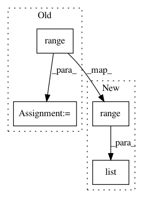

dc56b7e531a727b1fbaacdffccb01fbe7475dee1,tflearn/layers/normalization.py,,batch_normalization,#Any#Any#Any#Any#Any#Any#Any#Any#Any#,11
Before Change
tf.add_to_collection(tf.GraphKeys.EXCL_RESTORE_VARS, gamma)
ema = tf.train.ExponentialMovingAverage(decay=decay)
axis = [i for i in range(input_ndim - 1)]
if len(axis) < 1: axis = [0]
batch_mean, batch_var = tf.nn.moments(incoming, axis,
name="moments")
After Change
tf.add_to_collection(tf.GraphKeys.EXCL_RESTORE_VARS, beta)
tf.add_to_collection(tf.GraphKeys.EXCL_RESTORE_VARS, gamma)
axis = list(range(input_ndim - 1))
moving_mean = vs.variable(scope + "moving_mean",
input_shape[-1:],
initializer=tf.zeros_initializer,
trainable=False,
In pattern: SUPERPATTERN
Frequency: 3
Non-data size: 4
Instances
Project Name: tflearn/tflearn
Commit Name: dc56b7e531a727b1fbaacdffccb01fbe7475dee1
Time: 2016-04-24
Author: aymeric.damien@gmail.com
File Name: tflearn/layers/normalization.py
Class Name:
Method Name: batch_normalization
Project Name: shenweichen/DeepCTR
Commit Name: 2d720403e43ccbf2286c99876ce3bb8a9286f5c6
Time: 2020-03-15
Author: wcshen1994@163.com
File Name: deepctr/layers/interaction.py
Class Name: FieldWiseBiInteraction
Method Name: call
Project Name: chainer/chainercv
Commit Name: 1d8c0962120c41bb5f3e96e54697fd00a0a65de9
Time: 2018-04-08
Author: yuyuniitani@gmail.com
File Name: chainercv/visualizations/vis_semantic_segmentation.py
Class Name:
Method Name: vis_semantic_segmentation